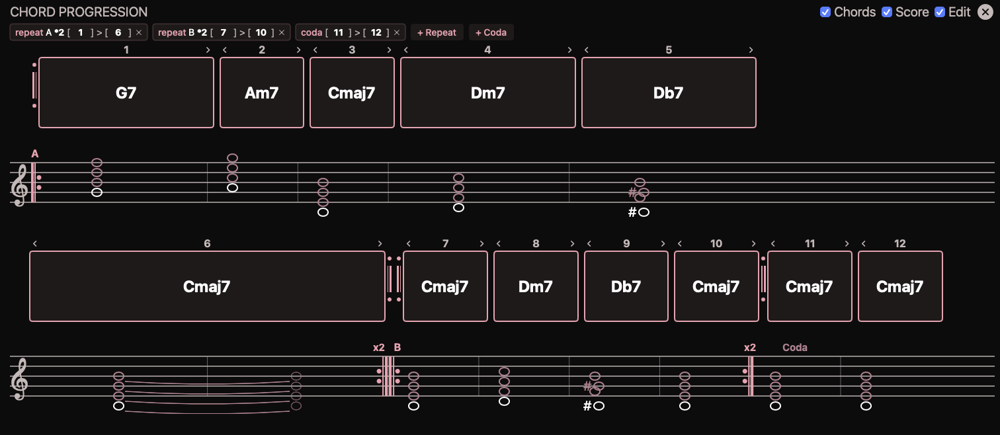
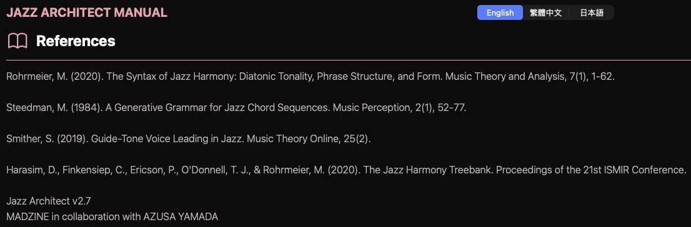
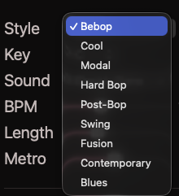

功能介紹
JazzArchitect 是一款基於規則的爵士和聲生成器，採用 Rohrmeier (2020) 提出的遞迴文法框架。程式以機率上下文無關文法（PCFG）為核心，透過 Tonic、Dominant、Subdominant 等非終端符號的遞迴展開與機率選擇，生成符合爵士和聲理論的和弦進行。系統內建三全音替代、二五進行、次屬和弦等爵士代理規則，生成結果在理論上具有正確的功能和聲結構。
程式支援 9 種爵士風格的參數化設定，涵蓋 Bebop、Hard Bop、Modal Jazz、Cool Jazz 等不同年代與流派。StyleVector 機制控制每種風格中各規則的生成機率權重，使用者可調整向量參數以混合不同風格的特徵。和弦進行生成後，系統自動執行聲部導引最佳化演算法，計算相鄰和弦之間最小聲部移動距離，確保聲部連接的流暢性。內建和弦合成引擎提供即時試聽功能。
程式同時提供 Standalone 應用程式與 Audio Unit v3 插件兩種形式。作為 AU 插件時，可在 Logic Pro、GarageBand 等 DAW 中作為 MIDI 生成器使用，輸出和弦的 MIDI 訊號至其他軌道。支援將生成的和弦進行匯出為 PDF 樂譜。C++ DSP 核心搭配 Swift UI 前端，支援 macOS 與 iOS。




特色一覽
- PCFG-based jazz chord progression generation
- 9 jazz styles support
- Voice leading optimization
- Chord synthesis engine
- Style vector control
- PDF score export
技術資訊
- 開發語言
- C++ (DSP) + Swift (UI)
- 平台
- macOS, iOS (Audio Unit v3)
- 版本
- v2.7